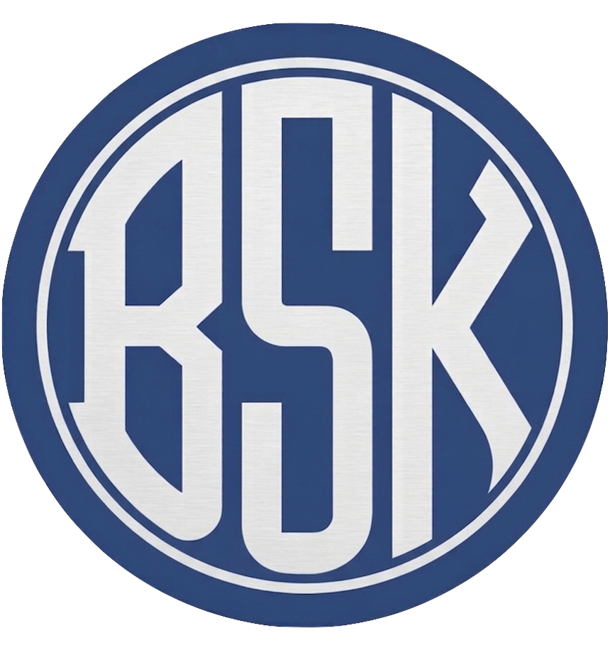

BSK Apps
Utilities for AV Professionals
QuickIP
Network toolkit for macOS
A lightweight network monitor toolkit with SSID display, speed test, network scan, presets and more
- Save IP presets and switch with one click
- SSID name display
- Built-in speed test
- Local network scanner - see every device on your network
- Ping devices on your network
- Link speed, multicast readiness and full/half duplex indicators
- Live download/upload speed in the menu bar
- IP conflict detection, subnet overlap warnings
- User configurable options
- Lives in the menu bar, always one click away
Lab Assistant
QLab workspace automation for macOS
A QLab automation tool for show preparation. Fix bad sound at the source. Select cues, handoff to the assistant
- LUFS normalisation and automatic level setting
- Mono routing and silence trimming
- BPM and key detection with Camelot reordering of cues
- Continue mode and fade & stop
- Cue numbering and colour coding
- Write results to cue notes
- Mint - standalone audio processor/convertor
- Nine non-destructive automatic modules
- QLab 4 and 5 compatible, works with free version too
Resources
Tools and scripts for AV professionals
Free Reaper LUA scripts for transport control and hardware patching.